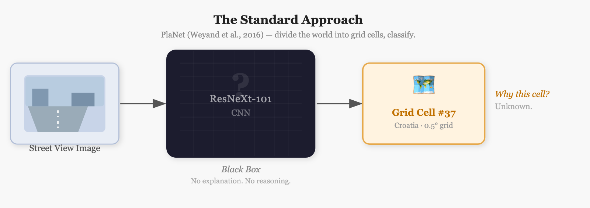
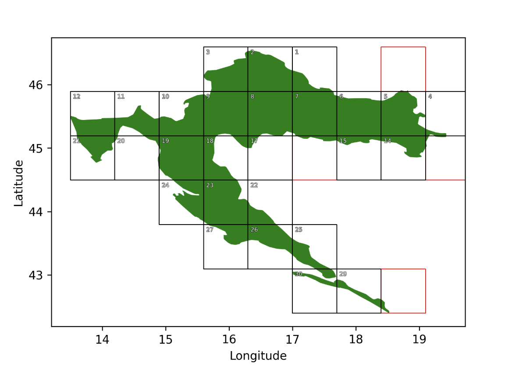
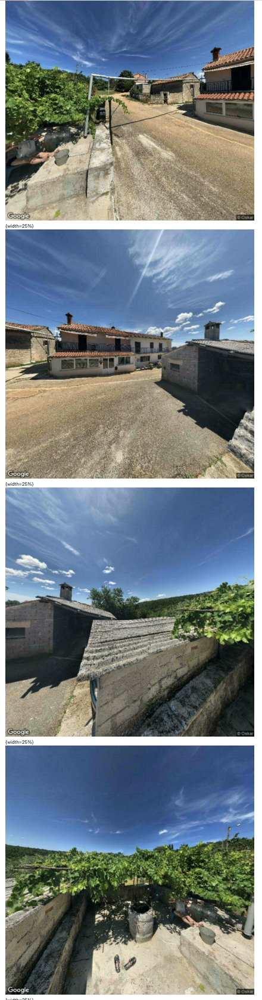
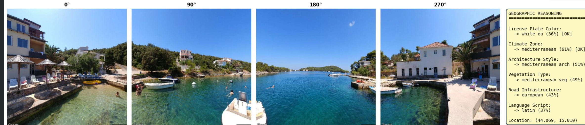
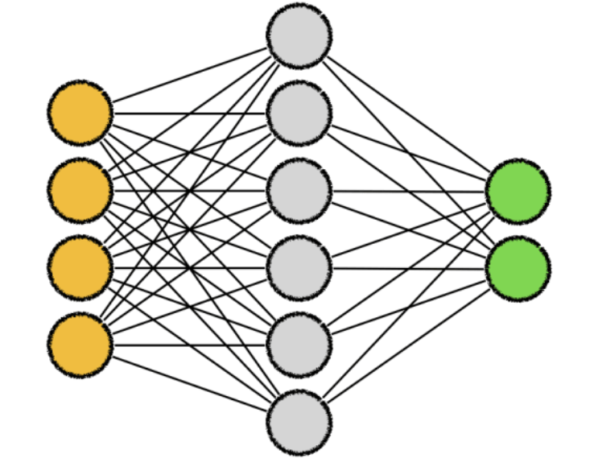

Reason-Guessr
Reason-Guessr
A geolocation system that extracts interpretable geographic cues — license plates, climate, vegetation, architecture — and fuses them with CLIP visual features to predict where a street-level image was taken in Croatia.
The core challenge is Image-Based Geolocation (IBG): determining the exact geographic coordinates (latitude/longitude) of a location solely from a single image. This problem is popularized by the game GeoGuessr, where players are dropped into a random Google Street View location and must deduce their whereabouts.
Unlike standard object recognition, IBG requires multi-level understanding of visual context:
Traditional models treat this as a classification problem — dividing the world into thousands of grid cells and training a CNN to predict the right cell. While effective at coarse localization, this is fundamentally a black box. When the model is wrong, there's no explanation. No reasoning chain. No way to improve without more data.

| Standard CNN Approach | How Humans Solve It |
|---|---|
|
Black-box classification into arbitrary grids
|
Explicit reasoning over visual cues
|
We ask: can we teach a model to reason the same way humans do? This project builds Reason-Guessr: a system that bridges pixel classification and geographic reasoning by extracting interpretable cues zero-shot using CLIP's image-text alignment, then fusing them with visual embeddings to predict latitude/longitude coordinates for street-level imagery in Croatia.
Image-based geolocation has significant real-world applications:
Beyond applications, IBG represents a shift from pure pixel classification toward structured visual reasoning. Our approach demonstrates that explicit geographic reasoning — extracting cues like climate zones, license plate colors, and architectural styles — can be integrated into end-to-end prediction pipelines, improving both accuracy and interpretability.
We built a Croatia-focused dataset using the Google Street View Static API. We sampled 8,000 random coordinates within Croatia's bounding box (latitude 42.4–46.5°N, longitude 13.5–19.4°E), verified Street View coverage via the metadata API, and downloaded four cardinal-direction images (0°, 90°, 180°, 270°) per valid location at 640×640 resolution.
This yielded 32,000 images across 8,000 unique locations, partitioned into 31 geographic grid cells at 0.7° spacing. The dataset was split 80/10/10 into train (6,400 locations), validation (800), and test (800).


Human GeoGuessr players don't make judgments from a single fixed viewpoint — they "look around" to gather contextual clues. The four cardinal views replicate this: one direction might show a license plate, another might capture a road sign with text, another might reveal architectural details. Aggregating these views via mean-pooling gives the model a richer spatial understanding of each location.
| Metric | Street View Dataset |
|---|---|
| Total Locations | 8,000 |
| Total Images | 32,000 (4 per location) |
| Geographic Classes | 31 (0.7° grid) |
| Train / Val / Test | 6,400 / 800 / 800 |
| Geographic Distribution | Uniform across Croatia |
Our methodology follows a three-phase progression from traditional CNN classification to zero-shot reasoning.
We adapted the ciglenecki/ml-competition-cv-geoguessr pipeline as our baseline. Croatia is partitioned into 31 geographic grid cells at 0.7° spacing. A ResNeXt-101 (32×8d) CNN pretrained on ImageNet classifies street-level images into these cells.
Architecture: Each location provides four cardinal-direction images (N/E/S/W). Each image is passed through the ResNeXt-101 backbone to extract a 2048-d feature vector. The four vectors are concatenated (4 × 2048 = 8192-d), then passed through a fully-connected classifier to predict one of 31 grid classes. The predicted class centroid becomes the final lat/lng estimate.
Training: Cross-entropy loss, Adam optimizer (lr=1e-4), OneCycleLR scheduler, 15 epochs, batch size 16. Backbone frozen for first 3 epochs, then unfrozen for fine-tuning.
We replace the ResNeXt backbone with a frozen CLIP ViT-B/32 encoder. Because CLIP was trained on 400M image-text pairs scraped from the internet, it has internalized rich geographic priors — associating visual patterns with semantic concepts like "Mediterranean architecture" or "Alpine vegetation" — without any explicit geolocation supervision.
Architecture: Same 4-view setup. Each image (640×640) is resized to 224×224 and passed through the frozen CLIP ViT-B/32 visual encoder to extract a 512-d [CLS] token embedding. The four embeddings are concatenated (4 × 512 = 2048-d), then passed through a lightweight linear classifier (95K parameters) to predict one of 31 grid classes.
Why frozen? Fine-tuning CLIP's 151M parameter backbone on 6,400 training examples would cause severe overfitting. By freezing the backbone and training only the linear head, we leverage CLIP's semantic knowledge while avoiding memorization. This acts as a powerful regularizer.
The full system extracts interpretable geographic cues zero-shot using CLIP's image-text alignment, then fuses them with the visual embedding to regress lat/lng directly — bypassing grid discretization entirely.
Step 1: Zero-Shot Cue Extraction
We define 6 geographic categories that mimic human reasoning:
For each image, we:

Example: For a coastal Dalmatian location, CLIP might extract:
Step 2: Fusion MLP
We concatenate the 49-d cue vector with the mean CLIP visual embedding (512-d averaged across 4 views) to form a 561-d feature vector. This is passed through a 2-layer MLP (561 → 256 → 2) to regress directly to (lat, lng) coordinates with MSE loss.

Why this works: The visual embedding captures low-level spatial patterns, while the cue vector provides high-level semantic structure. By fusing both, the MLP learns to map "Mediterranean climate + coastal architecture + EU plates" to specific coordinate ranges, mimicking human reasoning.
Hardware: Google Colab with NVIDIA A100 GPU (40GB VRAM). All training runs completed in <6 hours.
Frameworks: PyTorch 2.0, PyTorch Lightning 2.1, TorchVision 0.15, Transformers 4.36 (for CLIP), OpenCV 4.8.
Hyperparameters: Batch size 16, learning rate 1e-4 (frozen backbone) / 1e-5 (fine-tuning), weight decay 1e-3, OneCycleLR → ReduceLROnPlateau scheduler, 15 epochs total (CNN baseline) / 10 epochs (CLIP).
The baseline repository (ciglenecki/ml-competition-cv-geoguessr) was built in 2021 and required extensive debugging to run on modern environments:
1. Broken symlinks: The preprocessing script created symlinks from /content/dataset/train/<uuid>/ to /content/drive/MyDrive/.../images/<uuid>/ instead of copying files. This caused FileNotFoundError mid-epoch when Colab's Drive mount timed out. Fix: Added --copy-images flag to physically copy all files to local disk before training.
2. Incomplete UUIDs: 104 out of 8,000 UUID folders were missing one of the 4 directional images (e.g., had 0.jpg, 90.jpg, 180.jpg but not 270.jpg). These caused crashes during batch loading. Fix: Filtered CSV to exclude incomplete locations before generating train/val/test splits.
3. CSV/split mismatch: The rich static CSV (data_rich_static__spacing_0.5_classes_55.csv) referenced 8,000 UUIDs, but only 3,715 actually existed on disk after preprocessing. Training silently used the intersection, reducing effective dataset size. Fix: Manual CSV regeneration to match actual on-disk UUIDs.
4. Code compatibility bugs:
IndentationError in train.py line 203 — missing indent after conditionalKeyError: 'has_image' in preprocess_csv_create_rich_static.py — DataFrame column didn't exist in newer pandasTypeError from OneCycleLR(verbose=True) — parameter deprecated in PyTorch 2.0DeprecationWarning for pretrained=True → migrated to weights=ResNeXt101_32X8D_Weights.DEFAULT5. Colab-specific constraints: num_workers=0 required to prevent DataLoader multiprocessing deadlocks on Colab's sandboxed environment. Dataset workflow: zip on Google Drive → copy single .zip to /content/ → extract locally to leverage SSD speed (10× faster than Drive symlinks).
Finding the right training configuration required multiple iterations:
| Configuration | Learning Rate | Batch Size | Weight Decay | Test Accuracy | Notes |
|---|---|---|---|---|---|
| Initial (broken pipeline) | 2e-5 | 2 | 0 | 0.85% | Worse than random (1/31 = 3.2%) |
| Fixed preprocessing | 1e-4 | 16 | 0 | 10.9% | First working run |
| Added regularization | 1e-4 | 16 | 1e-3 | 17.2% | Weight decay helped |
| Larger dataset (5,042 imgs) | 1e-4 | 16 | 1e-3 | 21.4% | Data > hyperparameters |
| Final (8,000 locations) | 1e-4 | 16 | 1e-3 | 33.2% | Best CNN result |
Key insight: Doubling the dataset size from 2,496 to 5,042 images nearly doubled test accuracy (10.9% → 21.4%). Going from 5,042 to 8,000 increased it further to 33.2%. More data consistently outperforms hyperparameter tuning.
| Model | Train Acc | Val Acc | Test Acc | Median Haversine (km) | Overfitting Gap |
|---|---|---|---|---|---|
| ResNeXt-101 CNN | 99.4% | 19.6% | 33.2% | 82.82 | 79.8pp |
| CLIP ViT-B/32 (frozen) | 59.0% | 35.7% | 37.5% | 91.1 | 21.5pp |
| Reason-Guessr (Cue Fusion) | — | — | — | 88.9 | — |
Evaluated on all 8,000 Croatia locations with no training — pure CLIP image-text alignment:
Key finding: Global scene-level cues transfer brilliantly (Climate 96.8%, Plates 91.8%), while fine-grained cues struggle (Language 2.3%, Road Infra 18.9%). This validates our hypothesis that CLIP excels at holistic texture recognition but fails at detailed symbol detection. 84.8% of locations have all 4 reliable cues (Climate, Plates, Vegetation, Architecture) correct.
The ResNeXt-101 baseline achieved 99.4% train accuracy but only 33.2% test accuracy — a 79.8 percentage point overfitting gap. With 87M parameters and only ~6,400 training examples, the model doesn't learn geographic features — it memorizes training images.
Evidence: When we inspected misclassified test images, the CNN often predicted the training location most visually similar to the test image, rather than the geographically correct grid cell. It learned "this house texture belongs to cell #12" instead of "cell #12 covers the Istrian peninsula."
CLIP's frozen backbone reduces this gap to 21.5pp by leveraging 400M pretrained images. The frozen encoder acts as a powerful regularizer — it cannot memorize training examples, so it's forced to rely on semantic patterns.
CLIP achieved only 2.3% accuracy on language/OCR cues — the worst by far. 96% of locations were predicted as "Cyrillic script" when they actually contained Croatian Latin script. Why?
Future fix: Replace mean-pooling with cross-attention, allowing the model to focus on the single view containing readable text. Or integrate a dedicated OCR model (Tesseract, PaddleOCR) as a separate module.
Our clearest result: more data > better hyperparameters. Doubling the dataset from 2,496 to 5,042 images nearly doubled test accuracy (10.9% → 21.4%). The full 8,000-location dataset pushed it to 33.2%.
The original ciglenecki competition used 16,000+ locations. PIGEON trained on 4.7M images. Our 8,000 is still data-starved. Scaling to OpenStreetView-5M (4.7M global images) would likely push CLIP classification accuracy above 50%.